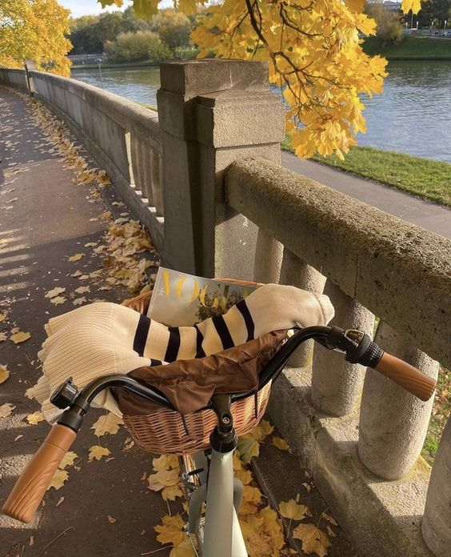

Reading
reading a novel provides a special kind of satisfaction
complete the puzzle
love complete the puzzles at free time
Knitting
Sewing and knitting are wonderful hobbies that can be both practical and enjoyable. Not only do they allow you to create beautiful, handmade items, but they can also be incredibly relaxing and therapeutic.

Cycling
Physical activity is key to good health, and cycling is an excellent way to work out your entire body.